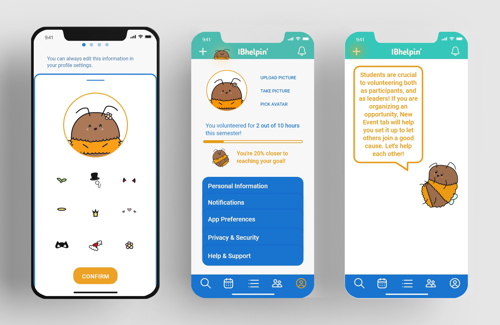
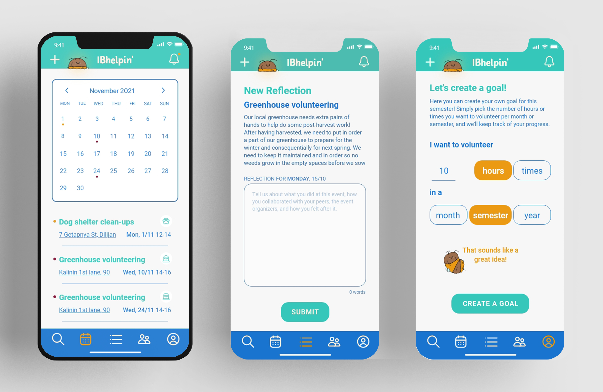

UI/UX - visual systems
ideator, UI/UX designer
Both my and my project partner graduated from the IB programme, and we had first hand experience of how stressful managing the service activites was together with academic activities as well as two other types of extra curriculars. The app was supposed to be a calming experience to relieve the students from some of the programme’s pressure.
IB is a program available to students around the world, so inclusivity was at the core of IBhelpin’s values. Language options, adjustable type size, and colour-blind tested colours were some of our ideas for how to make this experience available to as many people.
inclusive features including modes accomodating vision impairments, profile customising options, and encouraging community
In order to highlight the feeling of togetherness and mutual help, we developed a mascot for our app — Stefan the bee. His purpose was to create a welcoming, calming atmosphere and to provide guidance throughout the app. He was the first guide through the app’s functions, and we placed him on the top navigation in order for the students to always feel like they have him to consult if they felt overwhelmed. The bee was a deliberate choice, as they are generally considered to be very diligent and they work together. To highlight this nature of our app’s users we also let the students customise their bee as an avatar.
Stefan accompanies the user in every step of the experience
Service activity requirements for IB students are strict, and require long-term planning. Features such as a calendar with colour-coded activities, built in reflection feature, and a page for setting and tracking goals were implemented to help navigate the abundance of planning and mental effort that goes into this part of the IB curriculum.
